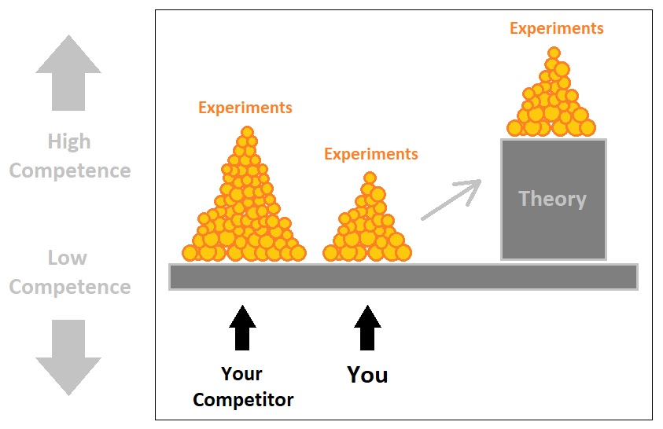
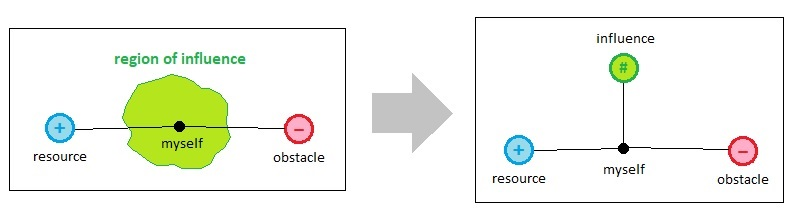
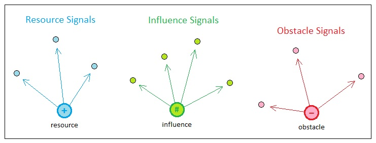
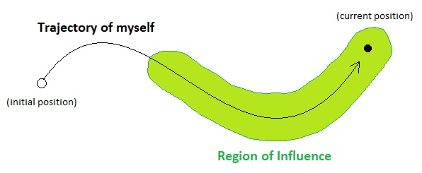
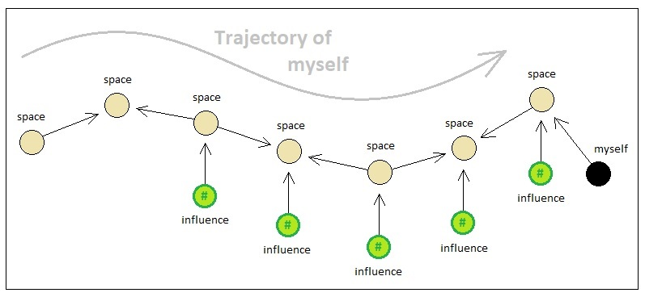
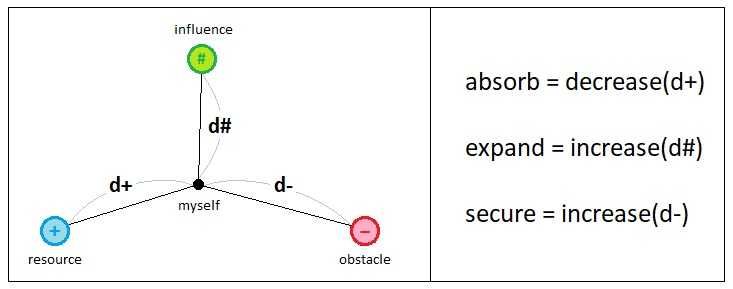
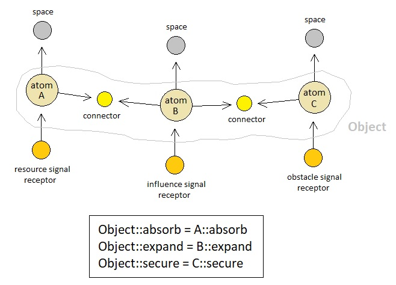
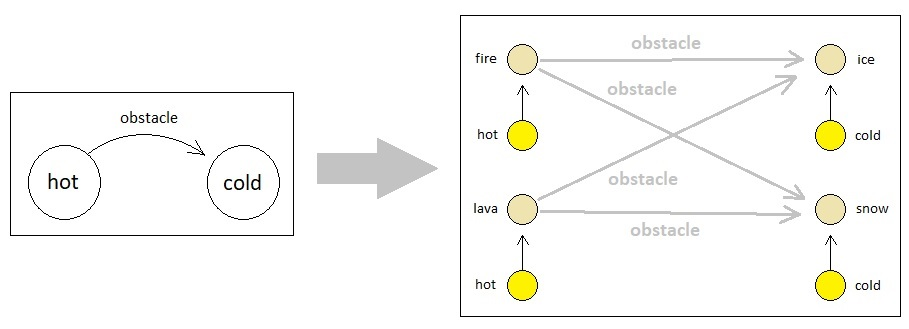
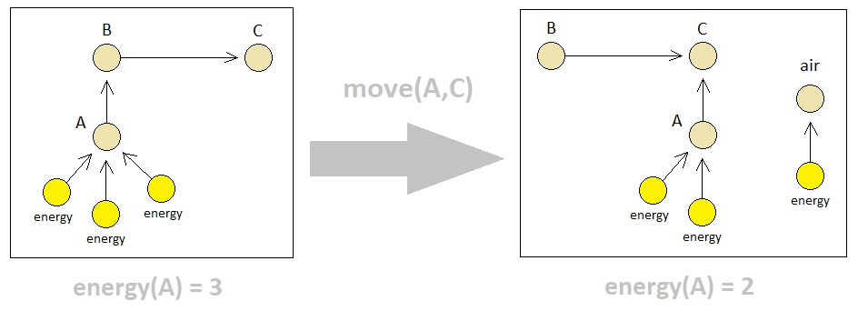
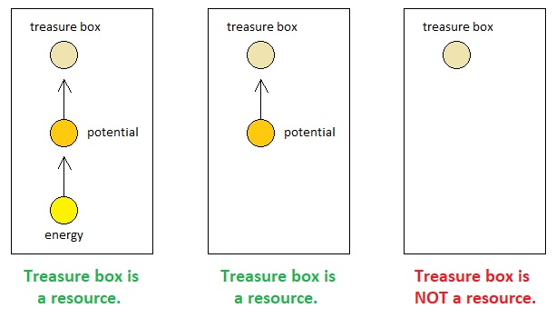

(Continued from Volume 7)
Designing a game often seems to appear as a complex process. It is due to our shared impression that, while a game's individual components are not necessarily complicated, the process of assembling them together to form a holistic picture of gameplay can indeed confound anyone who is involved in it. And because of this apparent complexity, it is widely believed that the full course of game development, as a whole, can only be approached via case-by-case perceptual experiments instead of a theoretical model.
Such a shared tendency of the game development community often results in endless rounds of vague subjective statements that are hardly less superficial than: "This game's water shader looks fantastic", "This game's lore sounds intriguing", "This game's procedural dungeon generator looks cool", and so forth.
One might ask, "What's wrong with that? Isn't a game, after all, an almost entirely player-centered medium of experience? As long as we conduct a set of experiments regarding the way in which the average player interacts with the game on a perceptual level, however "superficial" it might be, wouldn't they be accurately capturing the essence of what constitutes a game?"
This line of reasoning, without a doubt, is definitely valid to a certain extent. A game is indeed a set of experiences, and therefore a designer's habit of focusing on the outer facets of gameplay bears an acute sense of priority within the methodology of how a game should be designed. After all, players do not care what is really going on inside the game; they only care what they feel about the game.
However, we should also note that the game industry has changed quite drastically during the past few decades, and that we no longer live in the 80s and 90s back when even a rudimentary arcade game (i.e. something which would hardly require a sophisticated theory as a backbone of its construction) would've had some chance of commercial success. If we were living in those good old days, simply focusing on the player's experience itself and experimenting with it in a purely iterative manner would've been a decent approach for attracting a considerable number of customers. Sadly, we are living in an era where high competition and technological advancements have rendered such a methodology quite ineffective.
Most of us are aware of how stunningly capable some of the latest AI tools are. The field of artificial intelligence has been improved so dramatically these days, that creating many of the gameplay features is becoming easier than ever. This means that a game developer can no longer stand out from the rest of the competitors simply by perfecting the qualities of the game's experiential aspects (e.g. graphics, sound, writings, immersive actions, UI/UX, etc), and that the game's internal semantic structure itself must possess its own hint of ingenuity for the sake of being able to compete with millions of other games that are up there in the market, many of which are just as competent (if not more) in terms of providing the player with a series of cheap attention-hooking experiences.
Therefore, independent developers of today's game industry are facing a new kind of challenge which could mostly be ignored by older generations of game developers (i.e. Baby Boomers and Generation X) who were privileged enough to spend their early adulthood during the infancy of videogames, which also happily coincided with the era of economic prosperity led by Pax Americana, during which they were endowed with far more opportunities in terms of finding profitable niches. The struggle of our current generation is that, if there are far too many people who are capable of developing the most immersive videogames and finding out the most optimal strategy of selling them (with the help of easy-to-use game creation tools, digital distribution platforms, and social media), the only way in which you can ever have a considerable chance of success in the field of games (unless you are blessed with enormous budget) is to transcend beyond the commonly held definition of what a game is and introduce something new to the very nature of the idea of "game" itself - that is, create a brand new niche in which you can sell your games without too much competition, since most of the existing ones are pretty much saturated.
And this train of logic originates not from a stylish notion of "Art for art's sake", but from a practical consideration which anyone who is aware of the reality of today's gaming market cannot simply refuse to acknowledge. If we desire to sell our games in today's market, we must differentiate our games from the majority of others by shifting the entire dimension of how our games are being designed.
And because such a monumental task requires an almost complete reconfiguration of the game's inner system, it should not be taken as a form of intellectual snobbery to say that one must undertake the process of game design in a highly scientific fashion - that is, break down the nature of gameplay into its most fundamental building blocks (e.g. atoms), and then figure out the most robust yet minimal set of ways of assembling them together to be able to design any complex system without too much hassle.
This is one of the reasons why I have been emphasizing the importance of theory in contemporary game development practices.
I could technically keep ranting about this topic indefinitely, but since the main focus of this series of articles is about formulating the theory itself rather than complaining why it is being neglected by many developers, I will resume back to where we were at in the previous volume.
So far, we have been seeing a set of conceptual evidences which led us to the notion that the entire in-game universe can be expressed as a set of atoms and their topological bindings, without any necessity of representing continuous regions in space at least within the context of mathematical reasoning. This grand unification of spatial concepts helped us simplify down the gameplay dynamics into a system that is entirely made up of discrete (i.e. computable) entities.
A biological organism, which can be considered the game's protagonist, can be thought of as an atom that is being surrounded by 3 other types of atoms - "resources", "obstacles", and "influences".
From the very beginning, it has been clearly assumed that an organism's instinct motivates it to collect resources, avoid or destroy obstacles, and expand its own region of influence. And since our gameplay model now represents the continuum of space as a set of atoms (each of which refers to a region in space), it has also been discovered that the region of influence can be expressed as a set of atoms called "influences".
The problem which was left unsolved at the end of the previous volume was the problem of describing how the organism should behave in regards to its influences for the purpose of expanding its region of influence. And in order to solve this, we should remind ourselves that the idea of such a type of expansion pertains to the idea of increasing the overall exposure of influence atoms against the rest of the environment.
What this means is that, in order to have a region of influence that is as wide as possible, a lifeform must allocate its influence atoms to as many positions in space as possible. And the reason behind this is that, as we start identifying influences as signal emitters whose emitted signals impact the way in which their receivers behave, we can make a rough generalization that the number of locations which are occupied by influences is a fairly reasonable measure of the overall rate of impact that the organism is imposing upon the world.
Just like resources emit their own "resource signals" and obstacles emit their own "obstacle signals", influences emit their own "influence signals".
And let us remind ourselves of the basic presuppositions that were made back in volume 1. According to them, any point in space which is sufficiently close to any other point in space that has recently been traversed by the organism is assumed to be part of its region of influence. A casual analogy of this would be that, if we suppose that the whole gameplay environment is just one large iron plate and the organism is a tiny ball of fire which never dwindles in strength, we can fancy that anywhere on the iron plate that is sufficiently hot is part of the organism's region of influence.
This theoretical model can be formulated in an intuitively satisfying manner if we suppose that:
(1) The organism emits an influence at every time step,
(2) Each influence is static (i.e. never moves),
(3) Each influence emits an "influence signal" at every time step, which propagates through space radially,
(4) Each influence destroys itself once its lifespan is over,
(5) Each "influence signal" destroys itself once its lifespan is over, and
(6) Each position in space can only hold up to exactly 1 influence, in which case it gets saturated. If the organism's current location is saturated, it won't be able to emit an influence until it goes to somewhere else that is not saturated.
The organism is an influence-emitter; it creates footsteps wherever it goes, and such footsteps are hypothetical lightbulbs which radiate the organism's forces of influence from their own points of emission until they run out of energy and die out. Altogether, their combined field of radiation can be referred to as the organism's "region of influence".
In this context, the question of how to increase the area of one's region of influence becomes much clearer. Although our current discrete-space model does not allow us to accurately define the word "area" in a geometric sense, we can still share an implicit consensus that the whole purpose of trying to increase the area is to increment the overall rate at which other atoms of the universe receive the organism's "influence signals". And since each position in space can only contain 1 influence at a time, the organism must always keep moving away from its current set of influences in order to maximize the rate at which it can give birth to new influences.
From this, we can easily conclude that the desire to "Expand" one's region of influence is the same thing as the desire to increase the average distance between the organism and its nearby influences. The benefit of this new definition of the "Expand" goal is that its mathematical formulation perfectly aligns with the other two fundamental goals (i.e. "Absorb" and "Secure"), in the sense that they all measure their degrees of success based upon one unified metric called "distance". This is an example of mathematical minimalism.
And the principle of additive composition, which was mentioned along with the principle of mathematical minimalism, can be satisfied as well by separating out the responsibilities of individual atoms (by forcing each of them to follow only one of the three fundamental goals) and then assembling them together to form compound objects. Potential conflicts among the respective goals of these atoms can easily be resolved via signal-based decision protocols, as demonstrated in volume 6.
There are more details we have to consider in order to make this model work, however.
When there are two atoms called A and B, one may imagine that B is an obstacle of A. Let us, for the sake of convenience, simply assume that it really is the case. The main problem with this imagination-driven approach to game design, though, is that it requires us to manually devise all sorts of complex relations among all types of atoms that can ever exist inside the game, which is such a pain that we want to avoid.
It is indeed possible to come up with a clever shortcut to mitigate the workload of such a manual way of design, such as assigning keywords to atoms and then constructing logical relations among such keywords. For example, one may say that a fire-atom and a lava-atom both have the keyword "hot", and that any atom which has the keyword "cold" must be an obstacle of any atom which has the keyword "hot". This way, one can automatically ensure that both a fire-atom and a lava-atom will be able to recognize any "cold" atom an obstacle, without having to manually specify a relation between every pair of unique atoms.
Even a shortcut like this, however, is bound by the limitations of qualitative evaluation. We may say that cold atoms are obstacles of hot atoms because coldness (lack of heat) has a tendency of taking thermal energy away from hot atoms and thus impairing their ability to preserve their own identity of hotness, but this sort of direct rational reasoning only applies to strictly mechanical circumstances. When we are defining relations between atoms that are not only mechanical but also narrative in nature, we cannot simply assume that the causal origins of such relations will always present themselves as self-evident in an intuitively satisfying manner.
Relations that are tricky to derive are often found in cases in which atoms are endowed with characteristics that are not strictly quantifiable. Suppose that there is a wizard who firmly believes that the entire world must be filled with donuts and nothing else, and that the ultimate purpose of his life is to convert every object he saw into a donut by casting a magic spell. He never eats a donut because such an act would reduce the overall ratio of donuts over the total number of objects in the universe, so the process of making donuts does not provide this man with any physiological benefit. The only thing which motivates him to keep transforming everything into a donut is his mysterious belief alone, which does not seem to be stemming from any further ground of logic.
In such a case, any atom that is not a donut must be identified as an obstacle to the wizard because he is apparently resolved to increase the average distance between himself and all things that are not donuts by sending them to the heaven (i.e. erasing them from the domain of existence by converting them to donuts). And when someone questions the reasoning behind such an establishment of relations, all we can say is, "It is just the way this guy thinks".
Abstract beliefs which do not directly pertain to changes in the distribution of physical assets (e.g. food, money, natural resources, etc) are quite tricky to deal with when it comes to organizing them in a quantitative (therefore systematically expandable) way. We can of course specify them somehow and create a rigid framework of logic on top of such specifications (e.g. Statements such as: "Any atom which does not have the keyword 'Donut' in it is an obstacle of any atom which has the keyword 'Wizard' in it", and so forth), yet this brute-force approach is exactly the kind of complexity we ought to avoid in order to prevent the whole design scheme from turning itself into an encyclopedia of case-by-case scenarios.
Fortunately, nothing apparently blocks us from saying that abstract beliefs hardly differ from those that are based on biological needs when it comes to identifying their causal origins on an atomic level. Just because something is abstract does not mean that it is required to follow a fundamentally different structure of logic from things that are concrete (e.g. need for food).
But for the purpose of precisely analyzing what is really going on underneath the surface of this mysterious concept called "belief", one must first revisit the suggested definitions of "resource" and "obstacle" which were stated back in volume 1. Supposing that there is an atom which represents a biological organism, we may say that a "resource" is any atom which adds energy to it, and that an "obstacle" is any atom which subtracts energy from it. A purely atomic ground of reasoning from which these definitions arise would be that there are atoms which represent units of energy, whose owner is the atom to which they are bound (That is, if there are N energy atoms bound to the organism, we can say that the amount of energy that can be used by the organism is N). And it is also pretty reasonable to assume that at least one of these energy atoms must be unbound from its owner whenever the owner executes an action (e.g. movement), since an action obviously requires energy to be consumed.
Based on this model, one can derive purely discrete and computable definitions of resources and obstacles.
Let us start with resources. A resource is an atom which, when sufficiently close to the observer, adds energy atoms to the observer's body. One potentially misleading assumption is that a resource must be carrying at least one energy atom it can donate. However, we should note that there could be entities which are identified as "resources" by the observer without actually having any morsel of energy it is currently able to give off, such as empty treasure boxes or empty fuel cans whose emptiness is not known beforehand.
It is more of the perceived possibility of giving energy to the observer which makes an atom a resource. A lottery can be considered a resource not necessarily because it has any money (i.e. financial energy) that is guaranteed to be delivered to the consumer right off the bat, but because it is deemed to reserve a certain amount of money which may be given to the consumer under the condition of "winning a lottery".
What does this mean in our atom-based gameplay model? A resource may or may not possess an energy atom which is capable of transferring its ownership to the observer, yet it is required that the observer believes that it does (because an empty treasure box whose emptiness is known is clearly not a resource, as well as a full treasure box that is somehow considered empty). Defining the presence of such a belief, though, is a tricky business due to its nature of subjectivity.
However, there are also clues which may let us grasp a better picture of what is going on. From a realist point of view, one may claim that there is something called "objective truth" in our world which is separate from our personal beliefs. As long as we are arguing based upon this context of reasoning, we can definitely say that each belief is either "true" or "false" depending on whether it aligns with our universe's absolute body of truth or not. This worldview is of course questionable because we define most of our knowledge of what is true or false (if not all) based off of what we can observe through our own perspectives, which is subjective in itself and is therefore not an accurate method of evaluating the objectives themselves. But the idea of a domain of pure truth that is invariant of what we believe is, however fictional it might be, a convenient way of organizing and classifying a wide assortment of beliefs in a consistent manner since it presents us with a fixed reference point to which we can anchor our definitions.
The "objective truth" of whether an atom is a resource or not depends on whether the atom really contains at least one energy particle that is capable of being handed off to the observer. On the other hand, it is also sensible to say that whether it is considered a resource from the observer's viewpoint depends on whether the observer believes in the presence of such energy particle. The main issue is that discovering an accurate causal connection between the objective truth and the observer's interpretation of it is an enormous challenge, for it is being determined by numerous parameters such as the observer's background knowledge, scope of observation (e.g. field of view, line of sight, etc), state of consciousness (e.g. hallucination, fatigue, etc), and so on. This depth of reasoning may convolute the game design process a bit too much at least during the early prototyping phase.
I would say that it must be reasonable, therefore, to find a nice middle ground between the subjectivity of the observer and the objectivity of things that are really happening inside our gameplay universe.
And here is the catch. Since the objectiveness of truth within the context of gameplay is nothing more than part of one grand fiction whose scope of logical associations is limited to the boundaries of whichever game we are designing, the degree of solidity of the objective truth itself can be whatever we want it to be. That is, the state of being uncertain can itself be an atomic constituent of truth in our fictional world.
A treasure box whose inner content is simply "undefined" prior to the moment of being opened is just as valid a constituent of a fictional universe as one whose inner content has been fully specified beforehand. The outcome of opening the box can simply be defined by the result of rolling a dice which happens right at the moment of opening it, and such a "deferred state of truth" will not contradict any logical construct as long as the outcome never fails to solidify itself when directly observed and does so in a consistent manner so that multiple observers under the same circumstance are always bound to observe it the same way.
Within the aforementioned context, a closed treasure box whose content is unknown to the observer can be assumed to contain something that is fundamentally undefined from the objective standpoint as long as the concept of being "undefined" is allowed to be part of the game's domain of objective truth; this "something" can be described as the potential for the treasure box to donate at least one energy atom to the observer. The presence of an energy atom and its transferability is undefined as long as the box is closed (not just "unknown", but "undefined" in the objective sense), yet the probability that such an energy atom may exist is a defined piece of information which clearly "exists" within the context of our reasoning and thus entitles us to call this box a "resource".
To summarize, I would say that an atom can be defined as a "resource" as long as it carries a potential for giving off energy to the observer, regardless of whether the existence of such capability is defined before the moment of observation. Likewise, an atom can be defined as an "obstacle" as long as it carries a potential for stealing energy from the observer, regardless of whether the existence of such capability is defined before the moment of observation.
In the next volume, I will delve into this new idea called "potential", and explain how it simplifies the nature of atom-to-atom relations down to a purely mechanical set of patterns. This will eventually even allow highly narrative scenarios to be broken down to a group of mechanics, thereby proving the feasibility of coming up with a "universal language" which unifies the language of narratives and the language of mechanics into one shared faculty of reasoning.
(Will be continued in Volume 9)